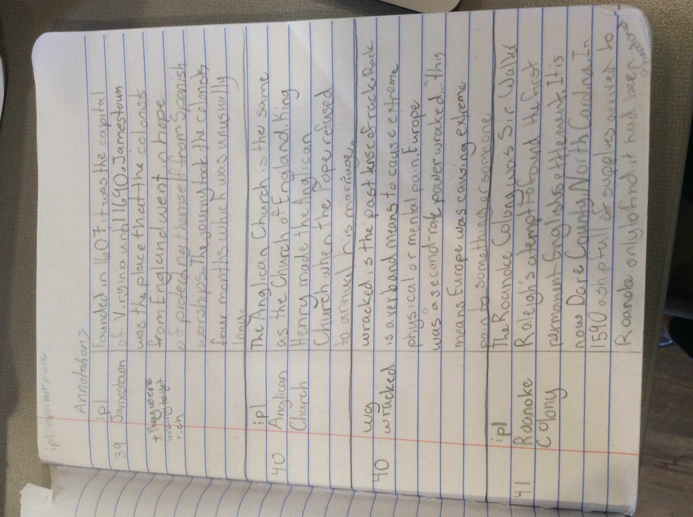
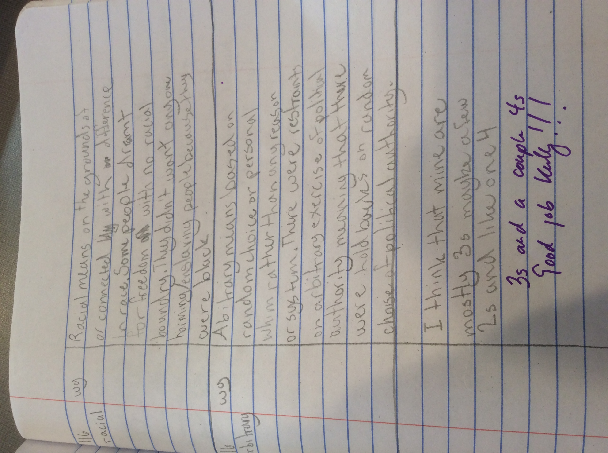

Goal
Social Studies Artifact
My social studies artifact is my first annotations and my last annotations. My annotations have improved a lot over the year. At the beginning of the year I did all of my annotations the night before they were due. This was a mistake because there were 40 pages and I did two annotations per page. I was up so late doing them. In my best annotations I did four or five annotation every night.

